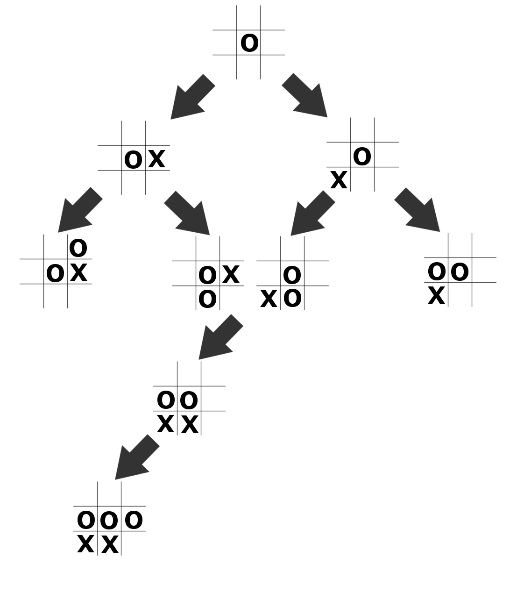
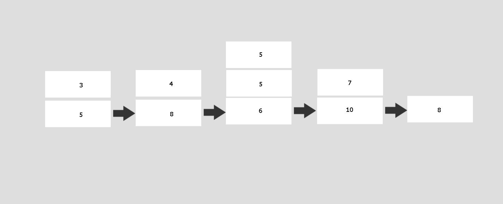

Bring your projects to life

Although I'm not a big fan of mushrooms, I consider myself a pretty fun-gi. Anyways, here are some of the fun things that I've done that I wanted to share with all of you. Hopefully it inspires you to do fun things as well. There's links to download all of the code on the page, or run the application (where applicable).
Block Breaker is a classic game, it's been around forever. So, I thought I would give it a go and try and make my own version. But what game isn't better with powerups. So, I also added some powerups to make gameplay more interesting. There are 6 levels, give it a shot and try to beat the game. Good luck. The controls are very basic, use the left and right arrow keys on the computer to move the paddle.
Many games where a player (Human) plays against a computer involves some form of what’s called a min-max algorithm. I will try and explain the min-max algorithm, but if you want to learn more, there’s tons of information online. You can download the Javascript code for this application and play against the AI using the links below.
Play Tic Tac Toe
Click one of the options below to download:
Javascript Code
The basic principle of the min-max algorithm, is the computer tries to maximize its score while minimizing the opponents score, hence min-max. The computer also assumes that both people will play the best move every time.
The code begins with the player (Human) clicking on a square. The row and column of that button are passed in to the makemove() function. The pseudocode for tictactoe is as follows:
makemove(row, col)
A = new 3x3 array. //Lets assume 0 is an empty square. 1 is the player, 2 is the computer.
Insert the player’s move.
If the game is over.
endgame(A)
return; // Quit the program.
result <— move(A)
put the rows and columns onto the board
if the game is over
endgame(A)
return // Quit the program
Now let's cover the endgame function, since it’s pretty straightforward and short.
endgame(A)
if player 1 won
display “Player 1 Won!”
else if computer won
display “Computer Won!”
else
display “The game Ended In A Draw”
And now that we got that out of the way, let's go on to the move function, where the fun really begins.
move(A)
// Here we pass in the current board, the starting depth, and the player that will move next (computer). We will come back to this.
result <— minmax(A, 0, “computer”)
// result is an array as follows: [bestscore, bestRow, bestCol] We will explore this in minmax()
row<— result[1]
col <— result[2]
return [row, col] // return an array containing the best row and best column
minmax(A, depth, player)
moves[] = get_available_moves(A)
// These four variables we will use throughout the code, so let’s just declare them here.
initialize currscore for later
bestRow <— -1
bestCol <— -1
initialize bestscore for later
if player 1 won OR computer won OR the game is over
bestscore <— score(A, depth)
else
if player = “computer”
bestscore = -Infinity
for every move, i, in moves
row <— row in current move
col <— column in current move
insert that place as the computer’s move
// Here we pass in depth+1, because it’s one more recursive call. We will use this later. We also want the opponent to “play” now, so we alternate who makes a move. And we get the [0] index, because that is where the score found will be returned at the end of the code.
currscore <— minmax(A, depth+1, “opponent”)[0]
if currscore > bestscore
bestscore <— currscore
bestRow = row
bestCol = col
undo that move we just tried above
else if player = “opponent”
bestscore = Infinity
for every move, i, in moves
row <— row in current move
col <— column in current move
insert that place as the opponent’s move
// Here we pass in depth+1, because it’s one more recursive call. We will use this later. We also want the computer to “play” now, so we alternate who plays. And we get the [0] index, because that is where the score found will be returned at the end of the code.
currscore <— minmax(A, depth+1, “computer”)[0]
if currscore < bestscore
bestscore <— currscore
bestRow = row
bestCol = col
undo that move we just tried above
// Return an array containing the best score, row, and column found so far.
return [bestscore, bestRow, bestCol]
There are 8 other helper methods in the code, but first I want to explain how this algorithm works, because if you’re not familiar with recursion, it can be a little tricky.
At every call of the recursive algorithm, the computer gathers all of the empty square, store in moves. It then tries them on at a time, recursively. Meaning it will consider the board in that state, then it will keep playing that version of the game until somebody wins, or the there are no move possible moves.
The tree of calls, if you will, might look like the following. This is a simplification for the sake of both your time and my time.

And now for the helper methods, starting with get_available_moves.
get_available_moves(A)
if player 1 won OR player 2 won
return an empty array
moves = empty array
for every row, i in A
for every column, j, in A
if A[i][j] is empty
sq <— [i, j] //an array containing the current row and column
add sq to moves.
return moves // return the list of all the moves found
gameover(A)
for every row, i, in A
for every column, j, in A
if the current square is not empty
return false
return true
If it never hits an empty square, then there must be at least one more move, so return true.
score(A, depth)
if player 1 won
return depth-100
else if computer won
return 100-depth
else
return 0
At the end of the recursive calls, meaning there are no more free squares, or somebody won, the minmax algorithm will call score. If the computer won, by subtracting depth from the arbitrary score of 100 for winning, we ensure that the computer will try to win in the least number of moves. If the player won, then it returns depth-100, meaning a smaller score for the player will result in least number of moves. This means that the minimal algorithm can consider both people beating the other person in the least number of moves.
And finally, the won method. This is a pretty simple algorithm, although there are a lot of parts to it, so let’s go through them one at a time. There are obviously many ways of writing this code, this is just one way.
won(val, A)
return checkCol(val, A) || checkRow(val, A) || diag(val, A) || diag2(val, A)
In order to win tic tac toe, you only have to win on one axis. I’ve defined diag() to be top left to bottom right, and diag2() to be top right to bottom left.
checkCol(val, A)
for every row, i, in A
check <— true
for every column, j, in A
if A[j][i] does not equal val
check = false
if check = true
return true
return false
checkRow(val, A)
for every row, i, in A
check <— true
for every column, j, in A
if A[i][j] does not equal val
check = false
if check = true
return true
return false
diag(val, A)
for every column, i, in A
if A[i][i] does not equal val
return false
return true
diag2(val, A)
for every column, i, in A
if A[Length of A - i][i] does not equal val
return false
return true
checkRow and checkCol work on the same principle. Because we know what value we are looking for, it simplifies the process. Assume that any column or row is true. Go through that column or row and if it never hits a value that isn't the value we are looking, val, then all the values in that column must be that val. So return true. If one of them isn’t val, then we go on to the next column or row. If no column or row meets the criteria, then return false.
diag() and diag2() work because the board is a sqaure. By going through the columns, to go top right to bottom left, subtract the number of the columns from the column you’re on and increment the rows. To go the other way, simply plug the current increment the row and column at the same time, and you move along the diagonal.
Although making a computer to solve a sudoku puzzle may seem difficult, it’s actually one of the easier recursive algorithms to program. You can download the code below in Javascript, or Java and test it yourself. You can also plug in your own sudoku board with the button linked below.
Open Sudoku Solver
Click one of the options below to download:
Java Code Javascript Code
The pseudocode for the algorithm is as follows:
I am assuming that we are passed in a 9x9 array containing the few values given on the board.
sudokusolver(A)
for i in every row of A
for j in every column of A
if the current space is not empty
continue
for num in [1-9]
if legalSquare(num, i, j, A)
A[i][j] = num
if sudokusolver(A)
return true
else
A[i][j] = empty
return false
return true
The algorithm recursively tries every number at every square, one at a time. If it gets to a point where it cannot insert a number, then it backtracks until it finds a number it can put in a square, and continues on from there.
There are a few helper methods used to implement legalsquare(). The pseudocode for those is as follows:
legalSquare(val, col, row, A)
return checkSquare(val, col, row, A) AND checkRow(val, row, A) AND checkCol(val, col, A)
checkSquare(val, col, row, A)
col = FLOOR(col/3) * 3
row = FLOOR(row/3) *3
for i in [col —> col+3] //go through columns
for j in [row —> row+3] // go through rows
if A[i][j] == val
return false
return true
checkRow(val, row, A)
for i in columns of A
if A[i][row] = val
return false
return true
checkCol(val, col, row, A)
for i in rows of A
if A[col][i] = val
return false
return true
LegalSquare assumes that there cannot already be a value (val) in either the closest box (3x3), current column or current row. If one of the helper methods (checkSquare, checkRow, or checkCol) return false, it means that one of them encountered that value. Meaning that is not a legal square for num. So legalSquare returns false.
I think checkCol and checkRow are pretty self-explanatory. They are passed in the column or row, respectively. They go through every item of that column or row, and if they hit a value, val, they return false. If they never do, return true.
checkSquare has another interesting problem, given any square, it must be able to find the start of the 3x3 box it’s in. This calculation we do in the first two lines of the function. The for loops then go 3 to the right, and 3 down, meaning it will cover all 9 squares in that 3x3 box, and check for the value in that box.
I worked with another student, Ali Siddiqui, while attending the University of Victoria, and together we developed a new way of sorting integers using a linked list of stacks.
Click one of the options below to download:
Java Code
The pseudocode for the main function of the algorithm is as follows
sort(A)
Create new linked list of stacks
for i in 0 —> length of A
insert(a[i])
i <— 0
for i in 0 —> length of A
a[i] = remove()
increment i
The sort() method simply reads every value of the array, A, and calls the insert method to insert them into the list. It then calls the remove method to systematically insert the items back into the array in sorted order.
The pseudocode for the insert function is as follows:
insert(value)
newNode = new node() //make a new node
if head == null // if the list is empty
push value onto the stack of the new node
head = newNode
else
node curr
if top of head stack >= value
push value onto head stack
return
for every node in list
if value <= top of current node stack
push value onto node stack
return
push the value onto newNode
add newNode to end of the list
The insert function creates a new node. If there are no nodes in the list, it inserts the value passed in on the new node. It then makes head node equal to the new node. If there is at least one element in the list, it checks to see if the value is smaller than the top of the first list. If it is, it pushes the node onto the top of the first stack and returns. If it is not, it continues through the list and checks the top of every stack until it finds a stack such that the top element is larger than the value. If it finds a stack, it adds the value to the top of the stack. If it gets to the end of the list, without finding a stack, it creates a new node at the end of the list, and puts the value on the stack of the newly created node.
The pseudocode for the remove function is as follows:
remove()
create new node min
keep track of previous node, initialize to null.
for every node in list
if top of min > top of next node
min = next node
previous = current node
a <— pop min
if stack on min is empty
if head = min
head = head.next // remove first node
if min is the end of the list
prev.next = null //remove last node
else
prev.next = min.next //remove node from middle of the list
return a
The remove function goes through the list every time, and pops the stack with the smallest element. It then checks to see if that stack is now empty, if it is, it removes that node from the list.
Here is a diagram of what the stack might look like after the insertion step:
Sample Input: [5 3 8 4 6 10 7 8 5 5]
So how does this algorithm do in terms of performance? Below is a graph comparing our algorithm to a number of other popular algorithms. You can download all of the code to test it yourself. In the testing functions, we created an array of varying size, and generated random numbers, and ran tests where each algorithm would sort the same array. We do this multiple times, and take the average between tests. When running the algorithm, you can specify the maximum size of the array you want to test, as well as the number of times you want to run each test. The code provided is written in Java.
You may have noticed that there are 3 versions of the algorithm in the graph above. The first version of the stack sorter algorithm used the pseudocode described above and used the built-in Java stack library. The second version was exactly the same as the first version, except we implemented stacks ourselves using linked lists. Going from the first to second version made a huge difference in performance, meaning out algorithm was now faster than Insertion sort. It turns out the built-in stacks library was written with Java 1.0 and never updated. So it isn't very well optimized for performance. The third version we introduced a hash table. The hash table makes an array based on powers of 10. We did this so that each list would be smaller, meaning it should theoretically take less time to sort. I thought I would explain version 2 in pseudocode for simplicity. The code available to download is version 3. (as of Nov. 2015)
Although we didn't implement them, we also came up with some theoretical ways of making our algorithm faster. If there was a way to further hash the values, such as by multiples of 10 or 100, each linked list would be shorter, meaning when inserting and removing, performance would be improved. Another possible way would be to store the minimum and second minimum from the stacks. And as long as the minimum stack is less than the top of the second minumum, remove from that stack, then return an array. This means that it cuts down on the number of times we go through the entire linked list. Also, if there was a way for a node to point to the next one during the insert process, then the remove function would be linear.
Our system specs and Java version are as follows:
No other programs were open on the machine at the time.